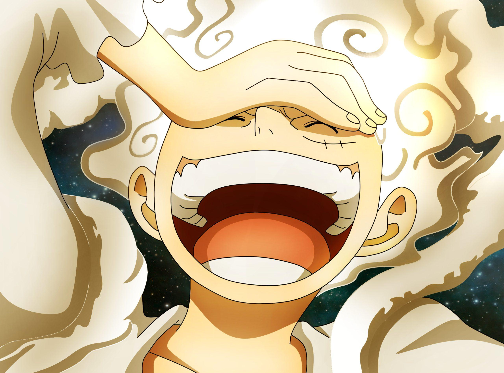

o Gear 5 consiste no "despertar" da Akuma no Mi (fruto do diabo) de Luffy. Ao alcançar esse estágio, o Chapéu de Palha consegue fazer com que vários elementos que estão ao seu redor também assumam essa característica elástica.
O despertar da Hito Hito no Mi, Modelo: Nika, anteriormente conhecida como Gomu Gomu no Mi, concede ao corpo de borracha do usuário uma força e liberdade excepcionais, permitindo que ele lute da maneira que desejar. Por essa razão, é dito que o usuário se torna o "Guerreiro da Libertação" (解放の戦士 Kaihō no Senshi?), trazendo alegria e liberdade para aqueles ao seu redor, e o poder dessa fruta é descrito como "o poder mais ridículo do mundo"
